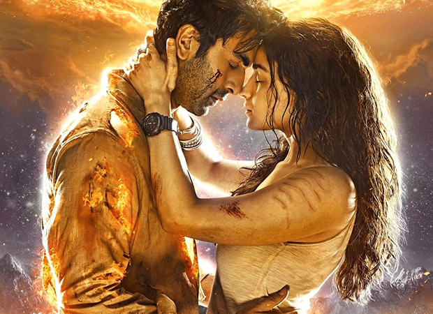

Kesariya Tera Ishq Lyrics
Song by Arijit Singh
original video

Mujhko itna bataaye koi
Kaise tujh se dil no lagaaye koi
Rabba ne tujhko banaane mein
Kar di hain husn ki khali tijoriyaan
Kaajal ki
Siyaahi se likhi
Hain tu ne jaane
Kitnon ki love storiyaan
[Kesariya tera ishq hai piya
Rang jaaun jo main Haath lagaaun
Din beete saara teri fikr mein
rain saari teri manaaun] x2
ANTRA
Patjhar ke mausam mein bhi
rangi chanaaron jaisi
Jhanke sannaaton mein tu
Veena ke taaron jaisi
Sadiyon se bhi lambi ye
Man ki amaavasein hain
Aur to phuljhadiyon vaale
Tyohaaron jaisi ..
Chanda bhi deevaana hai tera
Jalti hain tujhse
Sari chakoriyaan
Kaajal ki
Siyaahi se likhi
Hain tu ne jaane
Kitnon ki love storiyaan
[Kesariya tera ishq hai piya
Rang jaaun jo main Haath lagaaun
Din bite sara teri fikra main
rain sari teri khair manau] x2